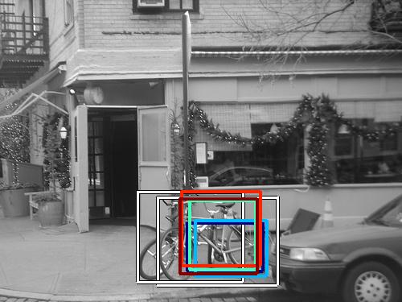
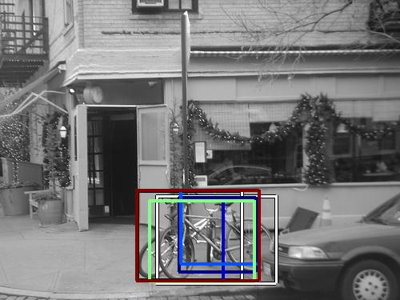

0.523420

0.616108

0.623683

0.626100

0.632126

0.644931

0.649226

0.658876

0.660067

0.685305
| Target image | 0.523420 | 0.616108 | 0.623683 | 0.626100 | 0.632126 | 0.644931 | 0.649226 | 0.658876 | 0.660067 | 0.685305 |
| Target image  |  3659.387939 |  3386.683594 |  3326.992188 |  3210.019043 |  3074.677979 |  2843.083984 |  2740.714355 |  2657.485352 |  2631.651123 |  2378.390137 |
Target image |  6363.804688 |  4355.322754 |  3765.630127 |  3223.407471 |  3113.864990 |  2732.072510 |  2625.046387 |  2513.416992 |  2451.931885 |  2449.282715 |
Target image |  3064.105469 |  2987.994629 |  2949.815918 |  2448.076904 |  2390.192871 |  2115.722656 |  1962.575928 |  1926.475830 |  1888.690674 |  1866.002441 |
| Target image  |  6420.401367 |  6280.764648 |  6274.799805 |  6048.226562 |  5327.697266 |  5266.496094 |  5068.506348 |  5018.629883 |  4996.030762 |  4406.844727 |